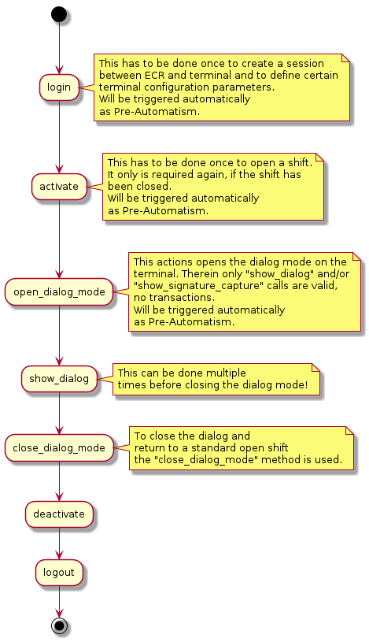

Introduction
The TIM API is the standard application interface for ECR integration using SIX Payment Services terminals.
TIM API provides a comprehensive feature set to support the requirements of several different markets. This guideline is intended to be used by ECR integrators that need to implement the TIM API functionality in their products.
The following document contains an overview structure, description of the TIM API modes synchronous/asynchronous and describes the corresponding functions, notifiers and data elements that can be used with the TIM API.
Setup Configuration
The configuration of the
terminal can be done by creating and configuring a
terminal settings-instance. The
terminal settings-instance must then be passed to the
terminal_createfunction.
Once a
terminal-instance has been created with a
terminal settings-instance, the settings can not be changed anymore. Changes to the
terminal settings-instance will be ignored.
The network and guides configuration are explained in the following two chapters. For further information refer
to
terminal settings.
Network Configuration
The TIM API module can communicate with the Terminal over different communication channels. The default communication is over TCP/IP connection.
For TCP/IP connection there are two possible ways to connect to the terminal:
-
Broadcast-Mode:
- Terminal ID (TID) is known.
- The TIM API starts broadcasting on the default interface and connects to the connection information sent by the matching terminal.
-
Direct Connect:
- IP address of the terminal is known.
- Connection is established directly via IP.
Guides Configuration
There are various
guides covering different use case scenarios. The guide retail (
ta_c_guide_retail) is the basic guide and is activated as default. With
ta_terminal_settings_set_guides the guides can be configured. Important: the configuration needs to include all desired guides (including
the retail guide).
Code-example for creating a terminal including settings with activated guides retail and dialog:
ta_object_t terminal = ta_object_invalid;
ta_object_t settings = ta_object_invalid;
// create terminal settings instance
ta_terminal_settings_create(&settings);
// add wanted guides (with bitwise or)
ta_terminal_settings_set_guides(settings, ta_c_guide_retail | ta_c_guide_dialog);
// create terminal
ta_terminal_create(&terminal, settings);
// release terminal settings
ta_object_release(settings);
//...
// in the end release terminal as well
ta_oject_release(terminal);
Operation Overview
Follow these basic steps for using the TIM API:
- Create
terminal_settingsand initialize connection parameters (see Setup Configuration) - Create
terminalinstance using the createdterminal_settings - Set some properties if needed:
- set
pos_id - create
ecr_infoand add withta_terminal_add_ecr_data - add listeners (
ta_terminal_add_listener)
- set
-
ConnectandloginThis can be done automatically, when the first terminal operation is called or manually using the login method. - Use terminal operation functions.
A basic flow to show a dialog is:
Automatisms
The TIM API uses two different types of automatisms:
-
Pre-Automatisms: This means that all actions that need to be done before a function can be called. E.g. a transaction can be called in disconnected state without having called connect, login and activate in advance. These are called automatically by the TIM API before the transaction is performed. The Pre-Automatisms are enabled by default.
-
Post-Automatisms: These automatisms can be enabled or disabled using the fields auto_commit and fetch_brands. A Post-Automatism is triggered after an action has been performed. E.g. if a connect has been called and fetch_brands is activated, an application_information request is called automatically after the connect. Or if auto_commit is activated a commit is performed automatically after a transaction has been made. auto_commit and fetch_brands are enabled by default.
The following diagrams show the principle of the Pre-Automatisms and Post-Automatisms. Pre-Automatisms are enabled by default and cannot be disabled. If an error occurs the started request from the ECR is returned with an error.
Synchronous flow

Asynchronous flow

Terminal function overview
The basic operation mode of the terminal function calls are:
-
Synchronous
Function calls are blocking and return after the operation has finished. Error code is provided and indicates if request was successful or not. -
Asynchronous
Function call returns immediately after the operation has started successfully. A user-implemented callback function will then be called, after operation has finished. All callback functions receive aneventTheeventcontains aresult_codeindicating if there were errors or not. The user-implemented callback function has to be registered withta_terminal_add_listener.
Function calls on the terminal perform synchronous by default. The asynchronous function has the same name with "_async" appended to its name.
Code example for adding a terminal status listener:
/*
* Example for adding a terminal status listener
*
* \param[in] terminal Terminal instance
*/
void add_status_listener(ta_object_t terminal) {
ta_object_t listener = ta_object_invalid;
ta_s_terminal_listener_t listener_config;
// clear listener-config
memset(&listener_config, 0, sizeof(listener_config));
// add user-implemented callback to listener-config
listener_config.terminal_status_changed = mylistener_terminal_status_changed;
// optional: add user content to listener,
// pointer will be handed over to all callbacks:
//listener_config.user_pointer = &custom_struct;
// create listener-object
ta_terminal_listener_create(&listener, &listener_config);
// add listener-object to terminal
ta_terminal_add_listener(terminal, listener);
// release listener-object
ta_object_release(listener);
}
/*
* Callback for terminal status changes
*
* Will be called when status of terminal changes.
* \param[in] terminal Terminal instance
* \param[in] user_pointe User-pointer which can be set in the terminal listener
*/
void mylistener_terminal_status_changed(ta_object_t terminal, void *user_pointer) {
// implement your code to process status change here...
//printf(" > listener_terminal_status_changed\n");
}
Main / guide retail terminal functions
| Sync / Async function | Callback-Function | Description |
|---|---|---|
|
ta_terminal_activate
ta_terminal_activate_async |
activate_completed | Open a user shift. |
|
ta_terminal_application_information
ta_terminal_application_information_async |
pplication_information_completed | Request the list of brands available on the terminal. |
|
ta_terminal_balance
ta_terminal_balance_async |
balance_completed | Force the EFT Terminal to transmit all transactions to the host system as well to do the daily closing. |
|
ta_terminal_change_settings
ta_terminal_change_settings_async |
change_settings_completed | Change configuration parameters of the EFT Terminal. |
|
ta_terminal_commit
ta_terminal_commit_async |
commit_completed | Perform Commit-operation after a successful Transaction call. |
|
ta_terminal_counter_request
ta_terminal_counter_request_async |
counter_request_completed | Get counter information`s from the EFT Terminal. |
|
ta_terminal_connect
ta_terminal_connect_async |
connect_completed | Initiates a connection to the EFT Terminal. |
|
ta_terminal_dcc_rates
ta_terminal_dcc_rates_async |
dcc_rates_completed | Request DCC rates from the EFT Terminal. |
|
ta_terminal_deactivate
ta_terminal_deactivate_async |
deactivate_completed | Close a user shift. |
|
ta_terminal_disconnect
ta_terminal_disconnect_async |
disconnect_completed | Interrupts the connection to the EFT Terminal. |
|
ta_terminal_hardware_information
ta_terminal_hardware_information_async |
hardware_information_completed | Get hardware information from the EFT Terminal. |
|
ta_terminal_login
ta_terminal_login_async |
login_completed | Activate a communication session between the ECR and the terminal. |
|
ta_terminal_logout
ta_terminal_logout_async |
logout_completed | Terminate an active communication session between the ECR and the terminal. |
|
ta_terminal_reboot
ta_terminal_reboot_async |
reboot_completed | Force the EFT Terminal to reboot. |
|
ta_terminal_receipt_request
ta_terminal_receipt_request_async |
receipt_request_completed | Receive the latest receipt or a list of silent receipts. |
|
ta_terminal_reconciliation
ta_terminal_reconciliation_async |
reconciliation_completed | Force the EFT Terminal to transmit all financial transactions to the host system. |
|
ta_terminal_reconfig
ta_terminal_reconfig_async |
reconfig_completed | Force the EFT Terminal to get the configuration from the service center. |
|
ta_terminal_rollback
ta_terminal_rollback_async |
rollback_completed | Prevent a transaction from being committed to the transaction log and generates a technical reversal of the authorization. |
|
ta_terminal_software_update
ta_terminal_software_update_async |
software_update_completed | Force the EFT Terminal to start a Software Update. |
|
ta_terminal_system_information
ta_terminal_system_information_async |
system_information_completed | Request system information from the EFT Terminal. |
|
ta_terminal_transaction
ta_terminal_transaction_async |
transaction_completed` | Starts an EFT Terminal Transaction. |
Guide dialog terminal functions
| Sync / Async function | Callback-Function | Description |
|---|---|---|
|
ta_terminal_close_dialog_mode
ta_terminal_close_dialog_mode_async |
close_dialog_mode_completed | Close dialog mode on the terminal. |
|
ta_terminal_open_dialog_mode
ta_terminal_open_dialog_mode_async |
open_dialog_mode_completed | Open dialog mode on the terminal. |
|
ta_terminal_show_dialog
ta_terminal_show_dialog_async |
show_dialog_completed | Show dialog on the terminal |
|
ta_terminal_show_signature_capture
ta_terminal_show_signature_capture_async |
show_signature_capture_completed | Show signature capture on the terminal |
Additional callback functions
| Callback-Function | Description |
|---|---|
| request_completed | Operation started by an asynchronous function has finished. Applications can use both operation specific completion callback in combination with this generic completion callback. |
| terminal_status_changed | The terminal status has changed. The new status can be retrieved from the TerminalStatus property. |
C Language Specifics
Objects in TIM API C
The TIM API C is based on an object-type concept. Most TIM API functions will either take or return parameters
in shape of the "opaque type"
ta_object_t. For example:
ta_terminal_create will create a new terminal-instance, which returns a
ta_object_t. On the other hand terminal-function calls like
ta_terminal_get_terminal_id require the terminal-instance as parameter of type
ta_object_t.
Note: This concept introduces a behaviour similar to certain aspects of object-oriented programming to the environment of C. Similarities are as follows:
- For each object-type there are functions similar to getters and setters, in order to access the object-properties.
- The naming of getters and setters is as folllows: ta_DATATYPE_get/set_PROPERTY
- e.g.:
ta_terminal_settings_get_terminal_id()
- For each object-type there are functions similar to methods, performing object-specific tasks.
- e.g.:
ta_terminal_login()
- e.g.:
- For certain object-types create-functions exist, which are similar to constructors.
- e.g.:
ta_string_create()
- e.g.:
Memory Management in TIM API C
The memory needed for each object will be allocated and freed by the TIM API itself. However, the user is responsible to release retained objects, when no longer needed. Retained objects are:
- Objects returned by the TIM API as retained objects (e.g.
terminal-instance created withta_terminal_create, or ahardware_information_response-instance returned byta_terminal_hardware_information). - Objects that the user explicitly retained by calling
ta_object_retain. Basically eachta_object_retainmust be paired with ata_object_release. The TIM API tells you if returned objects are already retained or not. An object that hasn't been retained, must not be released (would lead to errors)! Objects that are returned as not-retained are to read immediately or to explictely retain withta_object_retain.
(see header-documentation or this doxygen-dok to determine, if objects are retained / not retained. Most IDE support doxygen of header-documentation and will show these information while coding).
Following an example of memory management. Shown by using a list:
/* --- Create list -------------------------------------------------- */
ta_object_t myList = ta_object_invalid;
ta_list_create(&myList);
/* --- Add an integer ----------------------------------------------- */
// Create an object of type integer, since list can only contain
// ta_object_t-instances
ta_object_t myInteger = ta_object_invalid;
ta_integer_create(&myInteger, 1234);
ta_list_add(myList, myInteger);
// Important: User must release the integer-object. Either now or later.
ta_object_release(myInteger);
/* --- Get size of list --------------------------------------------- */
size_t myListSize;
ta_list_get_count(myList, &myListSize);
/* --- Receive first element of list -------------------------------- */
ta_object_t myListElement = ta_object_invalid;
ta_list_get_at(myList, 0, &myListElement);
// do something with element...
// - user is responsible to know how to read /
// process retreived objects from list
// - in our case here it`s an integer-object
int64_t myIntValue = 0;
ta_integer_get_value(myListElement, &myIntValue);
printf("MyIntValue: %Id\n", myIntValue);
// Important:
// - The list returns list elements as not retained!
// - List element must not be released!
/* --- Release list ------------------------------------------------- */
ta_object_release(myList);
// - At this point, myListElement is no longer (reliably) accessible.
// Since list has been released, all its elements have been released
// as well, if no one else is retaining the list elements.
// - If user still wants to use myListElement, he needs to call
// ta_object_retain(myListElement) right after receiving it from
// the list. In this case, he later needs to release the list
// element with ta_object_release(myListElement).
Data Types in TIM API C
C doesn't provide data types / collections like string, boolean, list, timedate etc. Therefore the TIM API uses and provides a set of basic data types. In various places the TIM API requires or returns these data types.
| Data Type | Description |
|---|---|
| boolean | A Boolean type (true/false) |
| integer | An Integer type (64-bit) |
| list | A list collection. Supports create, add, get, index of, remove and more. |
| map | A map collection. Supports create, set, get, has, remove and more. |
| object | The base object (see [Objects in TIM API`C`. |
| string | A String type. Null-terminated character sequence. |
| timedate | Time-Date type. |